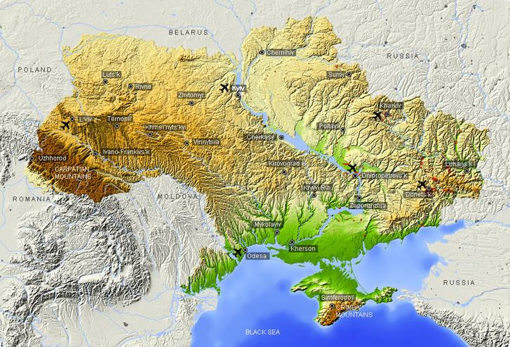
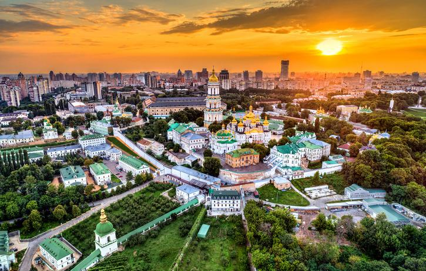
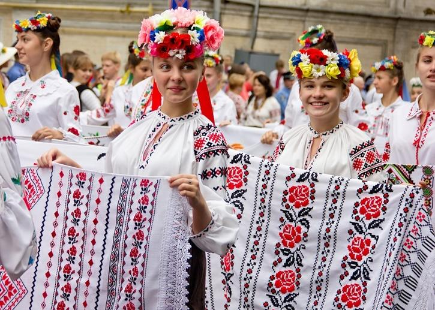
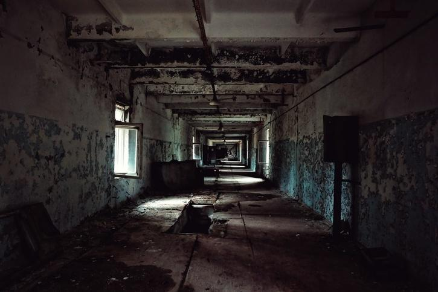
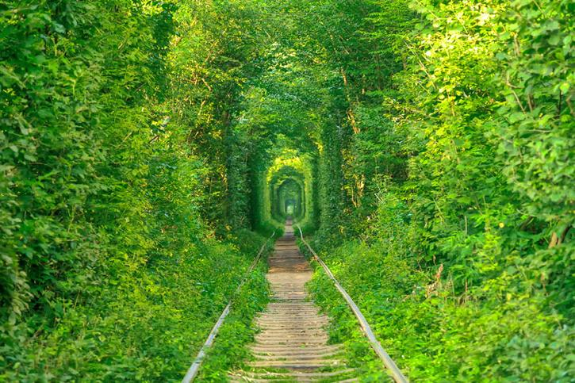
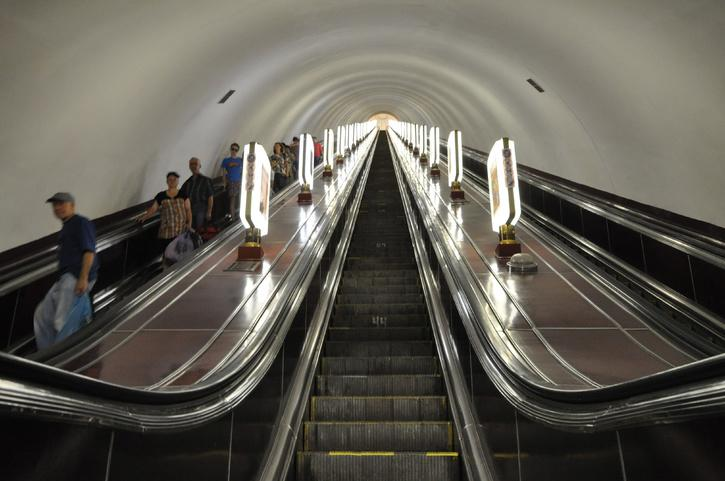
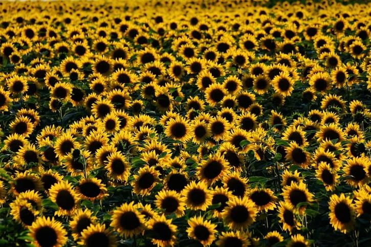

Interesting facts
The largest country in Europe
If you don’t include Russia which lies both in Asia and Europe, Ukraine is the biggest country in terms of area in Europe. The total area of Ukraine is 603.55 square km. While Ukraine is the biggest country in terms of area in Europe, it is not big in terms of population. With a population of about 43 million people, it is smaller than the population of Germany and France.


Ukraine has seven World Heritage Sites
Ukraine is home to seven sites protected by the UNESCO World Heritage List, they are also among the best places in Ukraine to visit. These include Kyiv’s Saint-Sophia Cathedral and Lviv’s historic centre, unique wooden churches in the Carpathians and the beech forests that surround them. Here’s a rundown of the amazing protected places you need to visit during your holidays in Ukraine.
National costume of Ukraine is Vyshyvanka
Vyshyvanka is the name of the National Costume of Ukraine. This is differentiated from others because of its embroidery work which features Ukrainian embroidery. Vyshyvanka is a plain white shirt made of linen and decorated with floral or ornamental hand-sewn embroidery. And the speciality of the costume is that it is worn by both men and women.


Home of many Ghost Towns
The deadliest nuclear disaster of all time, the Chernobyl Disaster, happened in Ukraine. The site where this disaster happened and its surroundings are located in northern Ukraine and are part of the Chernobyl Exclusion Zone, established by the USSR soon after the accident in 1986. Within the zones are a number of abandoned towns, most notably Pripyat, that draw interest from all over the world. Tours of the area, including the power plant, are available, at the risk of the traveller.
Famous 'Tunnel Of Love' is located here
The Tunnel of Love is a semi-abandoned railway line in Klaven, North-Western Ukraine noted as being the most romantic place on earth. This enchanting natural train tunnel is surrounded by green arches formed by trees on both sides of the single-track railway line. Its romantic setting attracts many couples to the place. According to local legends, couples who visit the place will have their wishes granted.


Deepest Metro Station in the World
The deepest metro station in the world is Arsenalna station on the Sviatoshynsko – Brovarska line located in Kyiv – the capital city of Ukraine. This subway station was opened on the 6th November 1960 as part of the first stage of the Kyiv Metro built and designed by the Soviet Union. The deepest metro station is Kyiv Metro's Arsenalna station located at a depth of 105.5 meters (346 ft).
World’s largest Sunflower seed producer
Ukraine is the world's largest producer of sunflower seeds, followed closely by Russia. The US is the world's 10th largest producer of sunflower seeds, with most being grown in South Dakota and North Dakota. It is estimated that the total size of Ukraine’s sunflower farmlands could cover the entire territory of Slovenia.


The 'Breadbasket Of Europe'
The vast tracts of arable land in Ukraine with fertile black soil made it an ideal place for growing wheat and other food crops. As such, it was nicknamed the "Breadbasket of Europe”. Today, Ukraine continues to be one of the largest producers of wheat in the world.